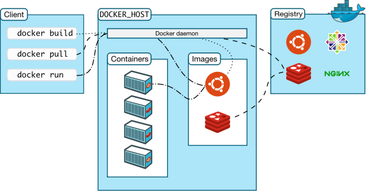
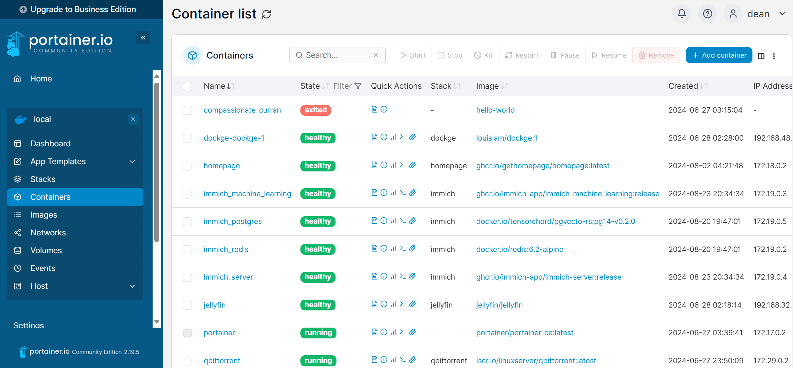
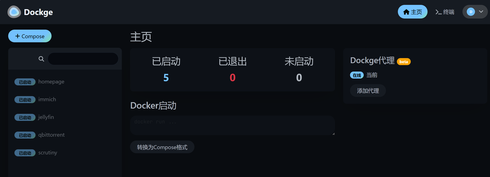

NAS（7）—— Docker 服务
概述
恭喜你读到了这里！如果你按照前面几篇文章配置下来，那么你的 NAS 已经可以应对各种数据存储需求了。接下来，我们要让 NAS 行使作为一台服务器的功能了。
Docker 是一个开源的应用容器引擎，基于 Go 语言 并遵从 Apache 2.0 协议开源。
Docker 可以让开发者打包他们的应用以及依赖包到一个轻量级、可移植的容器中，然后发布到任何流行的 Linux 机器上，也可以实现虚拟化。
容器完全使用沙箱机制，相互之间不会有任何接口，更重要的是容器性能开销极低。
如果有条件，请务必为你的 NAS 配置科学上网服务，可以使用部署在 OpenWrt 上等方法。由于国内镜像源不全面等原因，部分镜像在拉取时很容易出现超时的问题。尤其是 Docker 的安装过程，在没有代理的情况下很难完成。
Docker 架构

- 守护进程 (Docker daemon)：负责管理镜像、容器、容器网络、数据卷等。
- Client：负责发送 Docker 操作指令，日常主要通过 Client 完成镜像和容器的管理。
- 镜像 (Image)：即容器的模版，镜像是可以继承的，镜像主要通过 Dockerfile 文件定义。
- 镜像仓库 (Registry)：类似 Git 仓库, 只不过镜像仓库用于存储镜像和管理镜像的版本。
- 容器（Container）：容器是通过镜像创建的，所以说容器是一个镜像运行的实例，类似面向对象编程中类和对象的关系。
安装Docker
最简便的方式是采用官方脚本：
1 | curl -fsSL https://get.docker.com -o get-docker.sh |
关于在 Debian 上手动安装 Docker Engine 的步骤，可以参照官方文档。
Docker 镜像源配置
Docker 的镜像源文件配置在 /etc/docker/daemon.json处：
1 | sudo vim /etc/docker/daemon.json |
根据测试情况，酌情在配置文件中添加需要的镜像源链接，如下所示：
1 | { |
重启 Docker：
1 | sudo systemctl daemon-reload # 重启 daemon 进程 |
最后我们再验证一下是否修改成功，运行：
1 | sudo docker info |
在长串info信息中如果出现类似下文的内容：
1 | Registry Mirrors: |
那就说明我们的 Docker 国内镜像源修改成功了。
容器管理
创建容器专属账户
考虑到将要搭建的容器服务众多，甚至一部分服务还可能对 Internet 开放，为了安全，建议创建一个专用的低权限用户来运行各项容器。
使用命令行新建名为 application 的用户（名称可以自定义）：
1 | sudo adduser application |
输入命令：
1 | id application |
终端输出内容：
1 | uid=1001(application) gid=1001(application) groups=1001(application) |
记住对应的 UID 与 GID，如果容器需要使用低权限用户，请在 docker-compose.yaml 文件中如下配置：
1 | ... |
Docker 容器操作常用命令
这里仅列出日常配置涉及到的命令，不涉及容器的迁移等操作。

1 | sudo systemctl start docker # 启动 docker |
Docker Compose
Docker Compose 是一种用于定义和运行多容器应用程序的工具。它是实现简化和高效的开发和部署体验的关键。
Compose 简化了对整个应用程序堆栈的控制，使您可以轻松地在一个易于理解的 YAML 配置文件中管理服务、网络和卷。然后，只需一条命令，您就可以从配置文件中创建和启动所有服务。
安装 Compose：
1 | sudo apt update |
验证 Docker Compose 是否已正确安装：
1 | docker compose version |
Compose 使用的三个步骤：
- 使用 Dockerfile 定义应用程序的环境。
- 即指导 docker 构建镜像
- 使用 docker-compose.yml 定义构成应用程序的服务，这样它们可以在隔离环境中一起运行。
- 即指导 docker 构建容器，如果可以直接拉取现成镜像则无需 Dockerfile
- 最后，执行
docker compose up命令来启动并运行整个应用程序。
在最新版本的 Compose 中，优先使用compose.yaml（首选）或 compose.yml，它位于工作目录中。Compose 也支持 docker-compose.yaml 和 docker-compose.yml，以向后兼容早期版本。如果两个文件都存在，Compose 会优先使用规范的 compose.yaml。
compose.yaml文件示例：
1 | services: |
主要命令
1 | sudo docker compose up -d # 启动 compose.yaml 文件中定义的所有服务，-d 选项意为后台启动 |
对于大部分可以使用 Docker Compose 部署的服务，配置流程如下：
- 在工作目录下创建**
compose.yaml**文件，将服务文档中的内容复制进去，并根据实际情况调整配置 - 运行**
sudo docker compose up -d**命令，等待镜像拉取、服务启动即可
Portainer
Portainer是一款开源的容器管理工具，旨在简化 Docker 容器和 Kubernetes 集群的管理。通过提供一个直观的 Web 界面，Portainer 可以帮助用户轻松地创建、管理和维护容器，而无需使用复杂的命令行工具。

通过docker run命令安装：
1 | # 请将路径 /path/to/portainer 替换为您的，此路径存储 Portainer 配置文件。 |
安装完成后，通过 9443 端口访问即可。
Dockge
Dockge 是 Uptime Kuma 作者的新作品，因此 UI 风格与 Uptime Kuma 基本一致，如果你正在使用 Uptime Kuma 的话，那么 Dockge 的 UI 设计应该也不会让你失望。Dockge 主打的是简单易上手，与 Potainer 相比界面简洁易用，新手使用不会感到一头雾水。
缺点：
- 与 Portainer 等相比功能没有那么丰富，例如没有单独管理网络、镜像功能
- 无法直接接管现有正在运行的容器
- 只支持通过
Docker Compose来完成所有操作，无法直接管理单个容器

通过 Docker Compose 部署：
1 | services: |
安装完成后，通过 5001 端口访问即可。
下一章节：Nginx & HTTPS